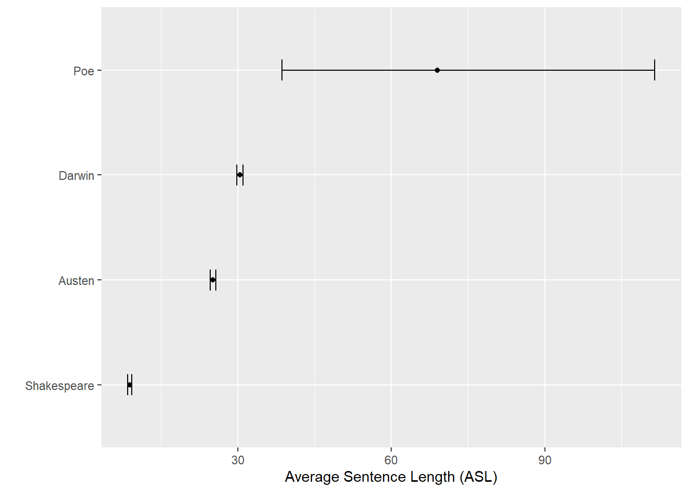

Computational Literary Stylistics with R
Dattatreya Majumdar and Martin Schweinberger
2022-09-13

Introduction
This tutorial focuses on computational literary stylistics (also digital literary stylistics) and shows how fictional texts can be analyzed by using computational means.

This tutorial is aimed at beginners and intermediate users of R with the aim of showcasing selected methods that are commonly used in or useful for computational literary stylistics with R. As such, the aim is not to provide a fully-fledged analysis but rather to show and exemplify selected useful methods. Another highly recommendable tutorial on computational literary stylistics with R is Silge and Robinson (2017) (see here), but the present tutorial substantially expands Silge and Robinson (2017) in terms of the range of methods that are presented and the data sources that are used.
The entire R Notebook for the tutorial can be downloaded here. If you want to render the R Notebook on your machine, i.e. knitting the document to html or a pdf, you need to make sure that you have R and RStudio installed and you also need to download the bibliography file and store it in the same folder where you store the Rmd file.
Here is a link to an interactive and simplified version of this tutorial on Google Colab. The interactive tutorial is based on a Jupyter notebook of this tutorial. This interactive Jupyter notebook allows you to execute code yourself and - if you copy the Jupyter notebook - you can also change and edit the notebook, e.g. you can change code and upload your own data.
What is computational literary stylistics?
Computational literary stylistics refers to analyses of the language of literary texts by computational means using linguistic concepts and categories, with the goal of finding patters among the literary texts and explaining how literary meaning/s is/are created by specific language choices. Computational literary stylistics has been linked with distant reading which aims to find patterns in large amounts of literary data that would not be detectable by traditional close reading techniques.
Preparation and session set up
This tutorial is based on R. If you have not installed R or are new to it, you will find an introduction to and more information how to use R here. For this tutorials, we need to install certain packages from an R library so that the scripts shown below are executed without errors. Before turning to the code below, please install the packages by running the code below this paragraph. If you have already installed the packages mentioned below, then you can skip ahead and ignore this section. To install the necessary packages, simply run the following code - it may take some time (between 1 and 5 minutes to install all of the packages so you do not need to worry if it takes some time).
# install packages
install.packages("tidytext")
install.packages("janeaustenr")
install.packages("tidyverse")
install.packages("quanteda")
install.packages("forcats")
install.packages("gutenbergr")
install.packages("flextable")
install.packages("quanteda.textstats")
install.packages("quanteda.textplots")
install.packages("lexRankr")
# install klippy for copy-to-clipboard button in code chunks
install.packages("remotes")
remotes::install_github("rlesur/klippy")We now activate these packages as shown below.
# set options
options(stringsAsFactors = F) # no automatic data transformation
options("scipen" = 100, "digits" = 12) # suppress math annotation
library(tidyverse)
library(janeaustenr)
library(tidytext)
library(forcats)
library(quanteda)
library(gutenbergr)
library(flextable)
# activate klippy for copy-to-clipboard button
klippy::klippy()Once you have installed R and RStudio and initiated the session by executing the code shown above, you are good to go.
Getting started
To explore different methods used in literary stylistics, we will analyze selected works from the Project Gutenberg. For this tutorial, we will download William Shakespeare’s Romeo and Juliet, Charles Darwin’s On the Origin of Species, Edgar Allan Poe’s The Raven, Jane Austen’s Pride and Prejudice, Athur Conan Doyle’s The Adventures of Sherlock Holmes, and Mark Twain’s The Adventures of Tom Sawyer (to see how to download data from Project Gutenberg, check out this tutorial).
The code below downloads the data from a server that mirrors the content of Project Gutenberg (which is more stable than the Project itself).
shakespeare <- gutenbergr::gutenberg_works(gutenberg_id == "1513") %>%
gutenbergr::gutenberg_download(mirror = "http://mirrors.xmission.com/gutenberg/")
darwin <- gutenbergr::gutenberg_works(gutenberg_id == "1228") %>%
gutenbergr::gutenberg_download(mirror = "http://mirrors.xmission.com/gutenberg/")
twain <- gutenbergr::gutenberg_works(gutenberg_id == "74") %>%
gutenbergr::gutenberg_download(mirror = "http://mirrors.xmission.com/gutenberg/")
poe <- gutenbergr::gutenberg_works(gutenberg_id == "1065") %>%
gutenbergr::gutenberg_download(mirror = "http://mirrors.xmission.com/gutenberg/")
austen <- gutenbergr::gutenberg_works(gutenberg_id == "1342") %>%
gutenbergr::gutenberg_download(mirror = "http://mirrors.xmission.com/gutenberg/")
doyle <- gutenbergr::gutenberg_works(gutenberg_id == "1661") %>%
gutenbergr::gutenberg_download(mirror = "http://mirrors.xmission.com/gutenberg/")gutenberg_id | text |
1,513 | THE TRAGEDY OF ROMEO AND JULIET |
1,513 | |
1,513 | |
1,513 | |
1,513 | by William Shakespeare |
1,513 | |
1,513 | |
1,513 | Contents |
1,513 | |
1,513 | THE PROLOGUE. |
1,513 | |
1,513 | ACT I |
1,513 | Scene I. A public place. |
1,513 | Scene II. A Street. |
1,513 | Scene III. Room in Capulet’s House. |
We can now begin to load and process the data.
Extracting words
The most basic but also most common task is to extract instances of individual words and seeing how they are used in context. This is also called concordancing. When extracting words, they are typically displayed in context which is why their display is called a keyword in context concordance or kwic, for short.
The code below extracts the word pride from the novel Pride and Prejudice and displays the resulting instances of this keyword in a kwic.
# extract text
austen_text <- austen %>%
dplyr::summarise(text = paste0(text, collapse = " ")) %>%
stringr::str_squish()
# give text a name
names(austen_text) <- "Pride & Prejudice"
# extract instances of pride
pride <- quanteda::kwic(austen_text, "pride") %>%
as.data.frame()docname | from | to | pre | keyword | post | pattern |
Pride & Prejudice | 19 | 19 | [ # 42671 ] cover | Pride | and Prejudice By Jane Austen | pride |
Pride & Prejudice | 6,228 | 6,228 | he is eat up with | pride | , and I dare say | pride |
Pride & Prejudice | 6,334 | 6,334 | him . " " His | pride | , " said Miss Lucas | pride |
Pride & Prejudice | 6,349 | 6,349 | offend _me_ so much as | pride | often does , because there | pride |
Pride & Prejudice | 6,421 | 6,421 | I could easily forgive _his_ | pride | , if he had not | pride |
Pride & Prejudice | 6,432 | 6,432 | mortified _mine_ . " " | Pride | , " observed Mary , | pride |
Pride & Prejudice | 6,516 | 6,516 | or imaginary . Vanity and | pride | are different things , though | pride |
Pride & Prejudice | 6,538 | 6,538 | proud without being vain . | Pride | relates more to our opinion | pride |
Pride & Prejudice | 12,173 | 12,173 | indeed , a mixture of | pride | and impertinence ; she had | pride |
Pride & Prejudice | 20,637 | 20,637 | " Such as vanity and | pride | . " " Yes , | pride |
Pride & Prejudice | 20,650 | 20,650 | a weakness indeed . But | pride | - where there is a | pride |
Pride & Prejudice | 20,661 | 20,661 | real superiority of mind , | pride | will be always under good | pride |
Pride & Prejudice | 25,298 | 25,298 | him altogether a mixture of | pride | and obsequiousness , self-importance and | pride |
Pride & Prejudice | 28,254 | 28,254 | Everybody is disgusted with his | pride | . You will not find | pride |
Pride & Prejudice | 29,732 | 29,732 | I wonder that the very | pride | of this Mr . Darcy | pride |
The kwic display could now be processed further or could be inspected to see how the keyword in question (pride) is used in this novel.
We can also inspect the use of phrases, for example natural selection, expand the context window size, and clean the output (as shown below).
# extract text
darwin_text <- darwin %>%
dplyr::summarise(text = paste0(text, collapse = " ")) %>%
stringr::str_squish()
# generate kwics
ns <- quanteda::kwic(darwin_text, phrase("natural selection"), window = 10) %>%
as.data.frame() %>%
dplyr::select(-docname, -from, -to, -pattern)pre | keyword | post |
edition . On the Origin of Species BY MEANS OF | NATURAL SELECTION | , OR THE PRESERVATION OF FAVOURED RACES IN THE STRUGGLE |
NATURE . 3 . STRUGGLE FOR EXISTENCE . 4 . | NATURAL SELECTION | . 5 . LAWS OF VARIATION . 6 . DIFFICULTIES |
. CHAPTER 3 . STRUGGLE FOR EXISTENCE . Bears on | natural selection | . The term used in a wide sense . Geometrical |
the most important of all relations . CHAPTER 4 . | NATURAL SELECTION | . Natural Selection : its power compared with man's selection |
of all relations . CHAPTER 4 . NATURAL SELECTION . | Natural Selection | : its power compared with man's selection , its power |
of the same species . Circumstances favourable and unfavourable to | Natural Selection | , namely , intercrossing , isolation , number of individuals |
number of individuals . Slow action . Extinction caused by | Natural Selection | . Divergence of Character , related to the diversity of |
any small area , and to naturalisation . Action of | Natural Selection | , through Divergence of Character and Extinction , on the |
of external conditions . Use and disuse , combined with | natural selection | ; organs of flight and of vision . Acclimatisation . |
of the Conditions of Existence embraced by the theory of | Natural Selection | . CHAPTER 7 . INSTINCT . Instincts comparable with habits |
its cell-making instinct . Difficulties on the theory of the | Natural Selection | of instincts . Neuter or sterile insects . Summary . |
CONCLUSION . Recapitulation of the difficulties on the theory of | Natural Selection | . Recapitulation of the general and special circumstances in its |
the immutability of species . How far the theory of | natural selection | may be extended . Effects of its adoption on the |
its new and modified form . This fundamental subject of | Natural Selection | will be treated at some length in the fourth chapter |
the fourth chapter ; and we shall then see how | Natural Selection | almost inevitably causes much Extinction of the less improved forms |
Identifying Keywords
Another common task in literary stylistics is to extract terms that are particularly characteristic of a given text. The problem underlying the identification of keywords is to figure out the importance of words in each document. We can assign weights to words that are more characteristic for a text if these terms are used more frequently than expected in a given text. We can then show terms ordered by their relative weight. Using the bind_tf_idf() function from the tidytext package, we can extract the term frequency - inverse document frequency, or tf-idf, scores which represent these relative weights and we can also report other parameters such as number of occurrences of that word, total number of words and term frequency.
Before we continue, we need to define certain terms of concepts that are related to literary stylistics and that we will use repeatedly in this tutorials and that we need to define so that the analysis shown below makes sense.
Term Frequency is the measure of importance of a word in a document or how frequently it appears in that document. However there are some words such as the,is, of, etc. which appear frequently even though they might not be important. An approach of using a list of stop-words and removing them before analysis can be useful but in case of some documents these words might be highly relevant.
The Inverse Document Frequency decreases the weight for most used words and increases the weight for words that are not much used in a collection of documents. This together with the Term Frequency can be used to calculate a term’s tf-idf (the multiplication of both the terms) which adjusts the frequency of the term based on how rarely it is used. Mathematically idf can be expressed as follows:
\[\begin{equation} idf_{(term)}= ln (\frac{n_{documents}}{n_{documents\; containing\; term}}) \end{equation}\]
Before we calculate the tf-idf, we will collapse all the books into a single data frame though.
books <- rbind(shakespeare, darwin, twain, poe, austen, doyle)
# add names to books
books$book <- c(
rep("Shakespeare", nrow(shakespeare)),
rep("Darwin", nrow(darwin)),
rep("Twain", nrow(twain)),
rep("Poe", nrow(poe)),
rep("Austen", nrow(austen)),
rep("Doyle", nrow(doyle))
)
# clean data
books <- books %>%
dplyr::filter(text != "") %>%
dplyr::mutate(book = factor(book)) %>%
dplyr::select(-gutenberg_id)text | book |
THE TRAGEDY OF ROMEO AND JULIET | Shakespeare |
by William Shakespeare | Shakespeare |
Contents | Shakespeare |
THE PROLOGUE. | Shakespeare |
ACT I | Shakespeare |
Scene I. A public place. | Shakespeare |
Scene II. A Street. | Shakespeare |
Scene III. Room in Capulet’s House. | Shakespeare |
Scene IV. A Street. | Shakespeare |
Scene V. A Hall in Capulet’s House. | Shakespeare |
ACT II | Shakespeare |
CHORUS. | Shakespeare |
Scene I. An open place adjoining Capulet’s Garden. | Shakespeare |
Scene II. Capulet’s Garden. | Shakespeare |
Scene III. Friar Lawrence’s Cell. | Shakespeare |
Now, we continue by calculating the tf-idf for each term in each of the books.
book_words <- books %>%
tidytext::unnest_tokens(word, text) %>%
dplyr::count(book, word, sort = TRUE) %>%
dplyr::group_by(book) %>%
dplyr::mutate(total = sum(n))
book_tf_idf <- book_words %>%
tidytext::bind_tf_idf(word, book, n)book | word | n | total | tf | idf | tf_idf |
Darwin | the | 10,301 | 157,002 | 0.0656106291640 | 0 | 0 |
Darwin | of | 7,864 | 157,002 | 0.0500885339040 | 0 | 0 |
Doyle | the | 5,623 | 105,378 | 0.0533602839302 | 0 | 0 |
Darwin | and | 4,443 | 157,002 | 0.0282990025605 | 0 | 0 |
Austen | the | 4,333 | 122,359 | 0.0354121887233 | 0 | 0 |
Austen | to | 4,163 | 122,359 | 0.0340228344462 | 0 | 0 |
Darwin | in | 4,017 | 157,002 | 0.0255856613292 | 0 | 0 |
Twain | the | 3,792 | 72,200 | 0.0525207756233 | 0 | 0 |
Darwin | to | 3,613 | 157,002 | 0.0230124457013 | 0 | 0 |
Austen | of | 3,612 | 122,359 | 0.0295196920537 | 0 | 0 |
Austen | and | 3,586 | 122,359 | 0.0293072025760 | 0 | 0 |
Twain | and | 3,125 | 72,200 | 0.0432825484765 | 0 | 0 |
Doyle | and | 3,018 | 105,378 | 0.0286397540284 | 0 | 0 |
Doyle | i | 3,003 | 105,378 | 0.0284974093264 | 0 | 0 |
Doyle | to | 2,744 | 105,378 | 0.0260395908064 | 0 | 0 |
From the above table it is evident that the extremely common words have a very low inverse document frequency and thus a low tf-idf score. The inverse document frequency will be a higher number for words that occur in fewer documents in the collection of novels.
book_tf_idf %>%
dplyr::select(-total) %>%
dplyr::arrange(desc(tf_idf))## # A tibble: 33,855 × 6
## # Groups: book [6]
## book word n tf idf tf_idf
## <fct> <chr> <int> <dbl> <dbl> <dbl>
## 1 Shakespeare romeo 300 0.0115 1.79 0.0206
## 2 Poe nevermore 11 0.0100 1.79 0.0180
## 3 Twain tom 722 0.01 1.79 0.0179
## 4 Darwin species 1546 0.00985 1.79 0.0176
## 5 Poe lenore 8 0.00730 1.79 0.0131
## 6 Shakespeare juliet 178 0.00681 1.79 0.0122
## 7 Poe raven 11 0.0100 1.10 0.0110
## 8 Shakespeare capulet 141 0.00540 1.79 0.00967
## 9 Austen elizabeth 596 0.00487 1.79 0.00873
## 10 Doyle holmes 462 0.00438 1.79 0.00786
## # … with 33,845 more rows# inspect
head(book_tf_idf)## # A tibble: 6 × 7
## # Groups: book [3]
## book word n total tf idf tf_idf
## <fct> <chr> <int> <int> <dbl> <dbl> <dbl>
## 1 Darwin the 10301 157002 0.0656 0 0
## 2 Darwin of 7864 157002 0.0501 0 0
## 3 Doyle the 5623 105378 0.0534 0 0
## 4 Darwin and 4443 157002 0.0283 0 0
## 5 Austen the 4333 122359 0.0354 0 0
## 6 Austen to 4163 122359 0.0340 0 0Next, we plot the 15 words with the highest tf-idf scores for each novel to show which words are particularly characteristic of each of the novels.
book_tf_idf %>%
dplyr::group_by(book) %>%
slice_max(tf_idf, n = 15) %>%
dplyr::ungroup() %>%
ggplot(aes(tf_idf, fct_reorder(word, tf_idf), fill = book)) +
geom_col(show.legend = FALSE) +
facet_wrap(~book, ncol = 2, scales = "free") +
labs(x = "tf-idf", y = NULL)Highest tf-idf words in each of Jane Austen’s Novels
As you can see, the method has indeed extracted words (and by extension concepts) that are characteristic of the texts.
Extracting Structural Features
Extracting structural features of texts is a very common and has a wide range of applications such as determining if texts belong to the same genre or if texts represent a real language or a made up nonsensical language, for example.
Word-Frequency Distributions
Word-frequency distributions can be used to determine if a text represents natural language (or a simple replacement cipher, for example) or if the text does not represent natural language (or a more complex cipher). In the following, we will check if the language used in texts we have downloaded from Project Gutenberg aligns with distributions that we would expect when dealing with natural language. In a first step, we determine both the term-frequency and the idf.
book_words <- books %>%
tidytext::unnest_tokens(word, text) %>%
dplyr::count(book, word, sort = TRUE) %>%
dplyr::group_by(book) %>%
dplyr::mutate(total = sum(n))book | word | n | total |
Darwin | the | 10,301 | 157,002 |
Darwin | of | 7,864 | 157,002 |
Doyle | the | 5,623 | 105,378 |
Darwin | and | 4,443 | 157,002 |
Austen | the | 4,333 | 122,359 |
Austen | to | 4,163 | 122,359 |
Darwin | in | 4,017 | 157,002 |
Twain | the | 3,792 | 72,200 |
Darwin | to | 3,613 | 157,002 |
Austen | of | 3,612 | 122,359 |
Austen | and | 3,586 | 122,359 |
Twain | and | 3,125 | 72,200 |
Doyle | and | 3,018 | 105,378 |
Doyle | i | 3,003 | 105,378 |
Doyle | to | 2,744 | 105,378 |
From the above table it is evident that the usual suspects the, and, to and so-forth are leading in terms of their usage frequencies in the novels. Now let us look at the distribution of n/total for each term in each of the novels (which represents the normalized term frequency).
ggplot(book_words, aes(n/total, fill = book)) +
geom_histogram(show.legend = FALSE) +
xlim(NA, 0.005) +
facet_wrap(~book, ncol = 2, scales = "free_y")Term frequency distributions
From the plots it is clear that we are dealing with a negative exponential distribution and that many words occur only rarely and that only few words occur frequently. In other words, only few words occur frequently while most words occur rarely. This relationship represents a distribution that is captured by Zipf’s law.
Zipf’s Law
Zipf’s Law represents an empirical power law or power function that was established in the 1930s. Zipf’s law is one of the most fundamental laws in linguistics (see Zipf 1935) and it states that the frequency of a word is inversely proportional to its rank in a text or collection of texts.
Let
N be the number of elements in a text (or collection of texts);
k be their rank;
s be the value of the exponent characterizing the distribution.
Zipf’s law then predicts that out of a population of N elements, the normalized frequency of the element of rank k, f(k;s,N), is:
\[\begin{equation} f(k;s,N)={\frac {1/k^{s}}{\sum \limits _{n=1}^{N}(1/n^{s})}} \end{equation}\]
In the code chunk below, we check if Zipf’s Law applies to the words that occur in texts that we have downloaded from Project Gutenberg.
freq_by_rank <- book_words %>%
dplyr::group_by(book) %>%
dplyr::mutate(rank = row_number(),
`term frequency` = n/total) %>%
dplyr::ungroup()book | word | n | total | rank | term frequency |
Darwin | the | 10,301 | 157,002 | 1 | 0.0656106291640 |
Darwin | of | 7,864 | 157,002 | 2 | 0.0500885339040 |
Doyle | the | 5,623 | 105,378 | 1 | 0.0533602839302 |
Darwin | and | 4,443 | 157,002 | 3 | 0.0282990025605 |
Austen | the | 4,333 | 122,359 | 1 | 0.0354121887233 |
Austen | to | 4,163 | 122,359 | 2 | 0.0340228344462 |
Darwin | in | 4,017 | 157,002 | 4 | 0.0255856613292 |
Twain | the | 3,792 | 72,200 | 1 | 0.0525207756233 |
Darwin | to | 3,613 | 157,002 | 5 | 0.0230124457013 |
Austen | of | 3,612 | 122,359 | 3 | 0.0295196920537 |
Austen | and | 3,586 | 122,359 | 4 | 0.0293072025760 |
Twain | and | 3,125 | 72,200 | 2 | 0.0432825484765 |
Doyle | and | 3,018 | 105,378 | 2 | 0.0286397540284 |
Doyle | i | 3,003 | 105,378 | 3 | 0.0284974093264 |
Doyle | to | 2,744 | 105,378 | 4 | 0.0260395908064 |
To get a better understanding of Zipf’s law, let us visualize the distribution by plotting on the logged rank of elements on the x-axis and logged frequency of the terms on the y-axis. If Zipf’s law holds, then we should see more or less straight lines that go from top left to bottom right.
freq_by_rank %>%
ggplot(aes(rank, `term frequency`, color = book)) +
geom_line(size = 1.1, alpha = 0.8, show.legend = FALSE) +
scale_x_log10() +
scale_y_log10()Zipf’s law for a sample of literary texts
We can see that the plot has a negative slope which corroborates the inverse relationship of rank with respect to term frequency which shows that the words in the texts from Project Gutenberg follow Zipf’s law. This would ascertain that we are dealing with natural language and not a made up nonsense language or a complex cipher.
Lexical Diversity
Lexical diversity is a complexity measure that provides information about the lexicon size of a text, i.e. how many different words occur in a text given the size of the text. The Type-Token-Ratio (TTR) provides information about the number of word tokens (individual instances of a word) divided by the number of different word types (word forms). Let’s briefly elaborate on that and look a bit more closely at the terms types and tokens. The sentence The dog chased the cat contains five tokens but only 4 types because the occurs twice. Now, a text that is 100 words long and consist of 50 distinct words would have a TTR of .5 (50/100) while a text that is 100 words long but consist of 80 distinct words would have a TTR of .8 (80/100). Thus, typically, higher values indicate higher lexical diversity and more complex texts or more advanced learners of a language commonly have higher TTRs compared to simpler texts or less advanced language learners.
As such, we can use lexical diversity measures to analyze the complexity of the language in which a text is written which can be used to inspect the advances a language learner makes when acquiring a language: initially, the learner will have high TTR as they do not have a large vocabulary. The TTRs will increase as lexicon of the learner grows.
In the following example, we calculate the TTRs for the literary texts we have downloaded from Project Gutenberg. Ina first step, we tokenize the texts, i.e. we split the texts into individual words (tokens).
books_texts <- books %>%
dplyr::group_by(book) %>%
dplyr::summarise(text = paste(text, collapse = " "))
texts <- books_texts %>%
dplyr::pull(text)
names(texts) <- books_texts %>%
dplyr::pull(book)
tokens_texts <- texts %>%
quanteda::corpus() %>%
quanteda::tokens()
# inspect data
head(tokens_texts)## Tokens consisting of 6 documents.
## Austen :
## [1] "THERE" "IS" "AN" "ILLUSTRATED" "EDITION"
## [6] "OF" "THIS" "TITLE" "WHICH" "MAY"
## [11] "VIEWED" "AT"
## [ ... and 144,002 more ]
##
## Darwin :
## [1] "Click" "on" "any" "of" "the"
## [6] "filenumbers" "below" "to" "quickly" "view"
## [11] "each" "ebook"
## [ ... and 177,159 more ]
##
## Doyle :
## [1] "cover" "The" "Adventures" "of" "Sherlock"
## [6] "Holmes" "by" "Arthur" "Conan" "Doyle"
## [11] "Contents" "I"
## [ ... and 126,079 more ]
##
## Poe :
## [1] "The" "Raven" "by" "Edgar" "Allan" "Poe"
## [7] "Once" "upon" "a" "midnight" "dreary" ","
## [ ... and 1,347 more ]
##
## Shakespeare :
## [1] "THE" "TRAGEDY" "OF" "ROMEO" "AND"
## [6] "JULIET" "by" "William" "Shakespeare" "Contents"
## [11] "THE" "PROLOGUE"
## [ ... and 32,889 more ]
##
## Twain :
## [1] "THE" "ADVENTURES" "OF" "TOM" "SAWYER"
## [6] "By" "Mark" "Twain" "(" "Samuel"
## [11] "Langhorne" "Clemens"
## [ ... and 86,822 more ]Next, we calculate the TTR using the textstat_lexdiv function from the quanteda package and visualize the resulting TTRs for the literary texts that we have downloaded from Project Gutenberg.
dfm(tokens_texts) %>%
quanteda.textstats::textstat_lexdiv(measure = "TTR") %>%
ggplot(aes(x = TTR, y = reorder(document, TTR))) +
geom_point() +
xlab("Type-Token-Ratio (TTR)") +
ylab("")We can see that Darwin’s On the Origin of Species has the lowest lexical diversity while Edgar Allan Poe’s The Raven has the highest. This would suggest that the language in The Raven is more complex than the language of On the Origin of Species. However, this is too simplistic and shows that simple Type-Token Ratios are severely affected by text length (as well as orthographic errors) and should only be used to compare texts
- that are comparatively long (at least 200 words)
- that are approximately of the same length
- that were error corrected so that orthographic errors do not confound the ratios
Average Sentence Length
The average sentence length (ASL) is another measure of textual complexity with more sophisticated language use being associated with longer and more complex sentences. As such, we can use the ASL as an alternative measure of the linguistic complexity of a text or texts.
library(lexRankr)
books_sentences <- books %>%
dplyr::group_by(book) %>%
dplyr::summarise(text = paste(text, collapse = " ")) %>%
lexRankr::unnest_sentences(sentence, text)book | sent_id | sentence |
Austen | 1 | THERE IS AN ILLUSTRATED EDITION OF THIS TITLE WHICH MAY VIEWED AT EBOOK [# 42671 ] cover Pride and Prejudice By Jane Austen CONTENTS Chapter 1 Chapter 2 Chapter 3 Chapter 4 Chapter 5 Chapter 6 Chapter 7 Chapter 8 Chapter 9 Chapter 10 Chapter 11 Chapter 12 Chapter 13 Chapter 14 Chapter 15 Chapter 16 Chapter 17 Chapter 18 Chapter 19 Chapter 20 Chapter 21 Chapter 22 Chapter 23 Chapter 24 Chapter 25 Chapter 26 Chapter 27 Chapter 28 Chapter 29 Chapter 30 Chapter 31 Chapter 32 Chapter 33 Chapter 34 Chapter 35 Chapter 36 Chapter 37 Chapter 38 Chapter 39 Chapter 40 Chapter 41 Chapter 42 Chapter 43 Chapter 44 Chapter 45 Chapter 46 Chapter 47 Chapter 48 Chapter 49 Chapter 50 Chapter 51 Chapter 52 Chapter 53 Chapter 54 Chapter 55 Chapter 56 Chapter 57 Chapter 58 Chapter 59 Chapter 60 Chapter 61 Chapter 1 It is a truth universally acknowledged, that a single man in possession of a good fortune, must be in want of a wife. |
Austen | 2 | However little known the feelings or views of such a man may be on his first entering a neighbourhood, this truth is so well fixed in the minds of the surrounding families, that he is considered as the rightful property of some one or other of their daughters. |
Austen | 3 | “My dear Mr. Bennet,” said his lady to him one day, “have you heard that Netherfield Park is let at last?” Mr. Bennet replied that he had not. |
Austen | 4 | “But it is,” returned she; “for Mrs. |
Austen | 5 | Long has just been here, and she told me all about it.” Mr. Bennet made no answer. |
Austen | 6 | “Do not you want to know who has taken it?” cried his wife impatiently. |
Austen | 7 | “_You_ want to tell me, and I have no objection to hearing it.” This was invitation enough. |
Austen | 8 | “Why, my dear, you must know, Mrs. |
Austen | 9 | Long says that Netherfield is taken by a young man of large fortune from the north of England; that he came down on Monday in a chaise and four to see the place, and was so much delighted with it that he agreed with Mr. Morris immediately; that he is to take possession before Michaelmas, and some of his servants are to be in the house by the end of next week.” “What is his name?” “Bingley.” “Is he married or single?” “Oh! |
Austen | 10 | single, my dear, to be sure! |
Austen | 11 | A single man of large fortune; four or five thousand a year. |
Austen | 12 | What a fine thing for our girls!” “How so? |
Austen | 13 | how can it affect them?” “My dear Mr. Bennet,” replied his wife, “how can you be so tiresome! |
Austen | 14 | You must know that I am thinking of his marrying one of them.” “Is that his design in settling here?” “Design! |
Austen | 15 | nonsense, how can you talk so! |
Let’s now visualize the results for potential differences or trends.
books_sentences %>%
dplyr::mutate(sentlength = stringr::str_count(sentence, '\\w+')) %>%
ggplot(aes(x = sentlength, y = reorder(book, sentlength, mean), group = book)) +
stat_summary(fun = mean, geom = "point") +
stat_summary(fun.data = mean_cl_boot, geom = "errorbar", width = 0.2) +
xlab("Average Sentence Length (ASL)") +
ylab("")
We can see that that The Raven (which does not contain any punctuation) is (unsurprisingly) the text with the longest ASL while Shakespeare’s play Romeo and Juliet (which contains a lost of dialogues) is deemed the work with the shortest ASL. With the exception of Poe’s The Raven, the ALS results reflect text complexity with Darwin’s On the Origin of Species being more complex or written like than the other texts with Romeo and Juliet being the most similar to spoken dialogue.
Similarity among literary texts
We will now explore how similar the language of literary works is. This approach can, of course, be extended to syntactic features or, for instance, to determine if certain texts belong to a certain literary genre or were written by a certain author. When extending this approach to syntactic features, one would naturally use features like the ALS, TTRs, or the frequency of adjectives as the basis for determining similarity. Regarding authorship, things like bigrams, spacing or punctuation methods would be relevant features.
To assess the similarity of literary works (based on the words that occur in the texts), we first create a feature list, i.e. a matrix with word frequencies. In the present case, we remove stop words as well as symbols (it can be useful to retain these but this is depends on the task at hand).
feature_mat <- books %>%
dplyr::group_by(book) %>%
dplyr::sample_n(100) %>%
dplyr::summarise(text = paste0(text, collapse = " ")) %>%
dplyr::ungroup() %>%
quanteda::corpus(text_field = "text", docid_field = "book") %>%
quanteda::dfm(remove_punct = TRUE, remove_symbols = TRUE) %>%
quanteda::dfm_remove(pattern = stopwords("en"))
# inspect data
feature_mat[1:6, 1:6]## Document-feature matrix of: 6 documents, 6 features (77.78% sparse) and 0 docvars.
## features
## docs propriety behaviour equally free symptom still
## Austen 1 2 1 1 1 2
## Darwin 0 0 0 0 0 0
## Doyle 0 0 1 0 0 0
## Poe 0 0 0 0 0 7
## Shakespeare 0 0 0 0 0 0
## Twain 0 0 0 0 0 0We see that the texts are represented as the row names and the terms the column names. The content of the matrix consists of the term frequencies.
We can now perform agglomerative hierarchical clustering and visualize the results in a dendrogram to assess the similarity of texts.
books_dist <- as.dist(quanteda.textstats::textstat_dist(feature_mat))
books_clust <- hclust(books_dist)
plot(books_clust)
According to the dendrogram, Conan Doyle’s The Adventures of Sherlock Holmes and Shakespeare’s Romeo and Juliet are the most similar texts. Edgar Allen Poe’s The Raven is the most idiosyncratic texts as it is on a branch by its own and is amalgamated with the other texts only as a very last step at the root of the tree.
Networks of Personas
A final procedure we will perform is a network analysis of the personas in Shakespeare’s Romeo and Juliet. We directly load a co-occurrence matrix which provides information about how often character’s in that play have been in the same scene (as the extraction of this information is a bit cumbersome, I have done that for you and you can simply load the matrix into R).
# load data
romeo <- read.delim("https://slcladal.github.io/data/romeo.txt", sep = "\t")
# convert into feature co-occurrence matrix
romeo_fcm <- as.fcm(as.matrix(romeo))
# inspect data
romeo_fcm## Feature co-occurrence matrix of: 23 by 23 features.
## features
## features Abraham Benvolio LordCapulet Gregory LadyCapulet LadyMontague
## Abraham 1 1 1 1 1 1
## Benvolio 1 7 3 1 2 1
## LordCapulet 1 3 9 1 7 1
## Gregory 1 1 1 1 1 1
## LadyCapulet 1 2 7 1 10 1
## LadyMontague 1 1 1 1 1 1
## LordMontague 1 2 2 1 3 1
## PrinceEscalus 1 2 2 1 3 1
## Romeo 1 7 5 1 4 1
## Sampson 1 1 1 1 1 1
## features
## features LordMontague PrinceEscalus Romeo Sampson
## Abraham 1 1 1 1
## Benvolio 2 2 7 1
## LordCapulet 2 2 5 1
## Gregory 1 1 1 1
## LadyCapulet 3 3 4 1
## LadyMontague 1 1 1 1
## LordMontague 3 3 3 1
## PrinceEscalus 3 3 3 1
## Romeo 3 3 14 1
## Sampson 1 1 1 1
## [ reached max_feat ... 13 more features, reached max_nfeat ... 13 more features ]As the quanteda package has a very neat and easy to use function (textplot_network) for generating network graphs, we make use this function and can directly generate the network.
quanteda.textplots::textplot_network(romeo_fcm, min_freq = 0.1, edge_alpha = 0.1, edge_size = 5)
The thickness of the lines indicates how often characters have co-occurred. We could now generate different network graphs for the personas in different plays to see how these plays and personas differ or we could apply the network analysis to other types of information such as co-occurrences of words.
We have reached the end of this tutorial. Please feel free to explore more of our content at https://slcladal.github.io/index.html - for computational literary stylistics, especially the tutorials on part-of-speech tagging and syntactic parsing as well as on lexicography with R provide relevant additional information.
Citation & Session Info
Majumdar, Dattatreya and Martin Schweinberger. 2022. Literary Stylistics with R. Brisbane: The University of Queensland. url: https://slcladal.github.io/litsty.html (Version 2022.09.13).
@manual{Majumdar2022ta,
author = {Majumdar, Dattatreya and Martin Schweinberger},
title = {Literary Stylistics with R},
note = {https://slcladal.github.io/litsty.html},
year = {2022},
organization = "The University of Queensland, Australia. School of Languages and Cultures},
address = {Brisbane},
edition = {2022.09.13}
}sessionInfo()## R version 4.2.1 (2022-06-23)
## Platform: x86_64-pc-linux-gnu (64-bit)
## Running under: Ubuntu 22.04.1 LTS
##
## Matrix products: default
## BLAS: /usr/lib/x86_64-linux-gnu/blas/libblas.so.3.10.0
## LAPACK: /usr/lib/x86_64-linux-gnu/lapack/liblapack.so.3.10.0
##
## locale:
## [1] LC_CTYPE=en_AU.UTF-8 LC_NUMERIC=C
## [3] LC_TIME=en_AU.UTF-8 LC_COLLATE=en_AU.UTF-8
## [5] LC_MONETARY=en_AU.UTF-8 LC_MESSAGES=en_AU.UTF-8
## [7] LC_PAPER=en_AU.UTF-8 LC_NAME=C
## [9] LC_ADDRESS=C LC_TELEPHONE=C
## [11] LC_MEASUREMENT=en_AU.UTF-8 LC_IDENTIFICATION=C
##
## attached base packages:
## [1] stats graphics grDevices datasets utils methods base
##
## other attached packages:
## [1] lexRankr_0.5.2 flextable_0.7.3 gutenbergr_0.2.1 quanteda_3.2.1
## [5] tidytext_0.3.3 janeaustenr_0.1.5 forcats_0.5.1 stringr_1.4.0
## [9] dplyr_1.0.9 purrr_0.3.4 readr_2.1.2 tidyr_1.2.0
## [13] tibble_3.1.7 ggplot2_3.3.6 tidyverse_1.3.2
##
## loaded via a namespace (and not attached):
## [1] googledrive_2.0.0 colorspace_2.0-3
## [3] deldir_1.0-6 ellipsis_0.3.2
## [5] htmlTable_2.4.1 base64enc_0.1-3
## [7] fs_1.5.2 rstudioapi_0.13
## [9] farver_2.1.1 SnowballC_0.7.0
## [11] ggrepel_0.9.1 bit64_4.0.5
## [13] fansi_1.0.3 lubridate_1.8.0
## [15] xml2_1.3.3 splines_4.2.1
## [17] knitr_1.39 Formula_1.2-4
## [19] jsonlite_1.8.0 broom_1.0.0
## [21] cluster_2.1.3 dbplyr_2.2.1
## [23] png_0.1-7 compiler_4.2.1
## [25] httr_1.4.3 backports_1.4.1
## [27] assertthat_0.2.1 Matrix_1.4-1
## [29] fastmap_1.1.0 lazyeval_0.2.2
## [31] gargle_1.2.0 cli_3.3.0
## [33] htmltools_0.5.2 tools_4.2.1
## [35] coda_0.19-4 gtable_0.3.0
## [37] glue_1.6.2 fastmatch_1.1-3
## [39] Rcpp_1.0.8.3 statnet.common_4.6.0
## [41] cellranger_1.1.0 jquerylib_0.1.4
## [43] vctrs_0.4.1 xfun_0.31
## [45] network_1.17.2 stopwords_2.3
## [47] rvest_1.0.2 nsyllable_1.0.1
## [49] lifecycle_1.0.1 renv_0.15.4
## [51] googlesheets4_1.0.0 klippy_0.0.0.9500
## [53] scales_1.2.0 vroom_1.5.7
## [55] hms_1.1.1 parallel_4.2.1
## [57] RColorBrewer_1.1-3 yaml_2.3.5
## [59] gridExtra_2.3 gdtools_0.2.4
## [61] sass_0.4.1 rpart_4.1.16
## [63] latticeExtra_0.6-30 stringi_1.7.8
## [65] highr_0.9 quanteda.textplots_0.94.1
## [67] tokenizers_0.2.1 checkmate_2.1.0
## [69] zip_2.2.0 rlang_1.0.4
## [71] pkgconfig_2.0.3 systemfonts_1.0.4
## [73] evaluate_0.15 lattice_0.20-45
## [75] htmlwidgets_1.5.4 labeling_0.4.2
## [77] bit_4.0.4 tidyselect_1.1.2
## [79] magrittr_2.0.3 R6_2.5.1
## [81] generics_0.1.3 Hmisc_4.7-1
## [83] sna_2.7 DBI_1.1.3
## [85] pillar_1.7.0 haven_2.5.0
## [87] foreign_0.8-82 withr_2.5.0
## [89] proxyC_0.2.4 survival_3.4-0
## [91] nnet_7.3-17 modelr_0.1.8
## [93] crayon_1.5.1 uuid_1.1-0
## [95] interp_1.1-2 utf8_1.2.2
## [97] tzdb_0.3.0 rmarkdown_2.14
## [99] officer_0.4.3 quanteda.textstats_0.95
## [101] jpeg_0.1-9 grid_4.2.1
## [103] readxl_1.4.0 data.table_1.14.2
## [105] reprex_2.0.1 digest_0.6.29
## [107] RcppParallel_5.1.5 munsell_0.5.0
## [109] bslib_0.3.1References
Silge, Julia, and David Robinson. 2017. Text Mining with R: A Tidy Approach. " O’Reilly Media, Inc.".
Zipf, K, George. 1935. The Psychobiology of Language. Houghton-Mifflin.